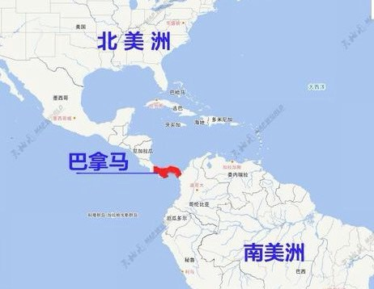
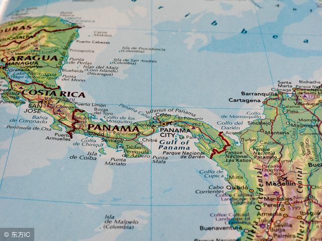
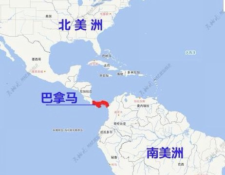
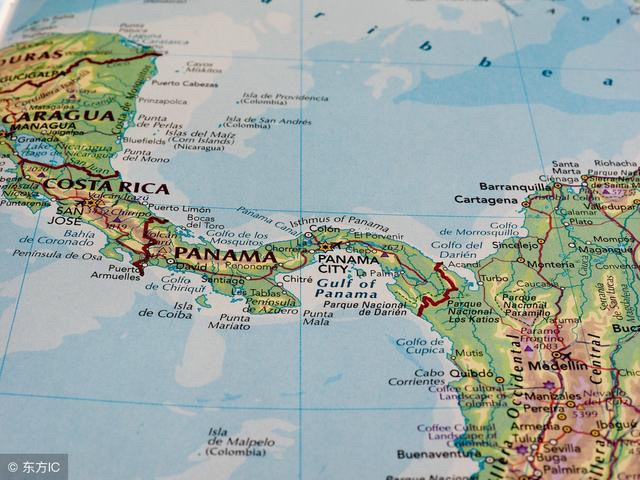
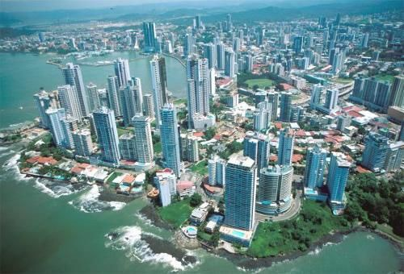
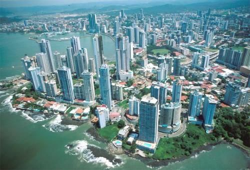
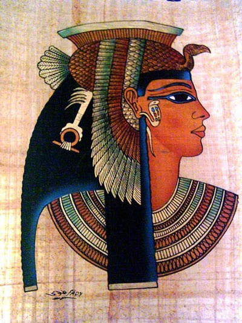
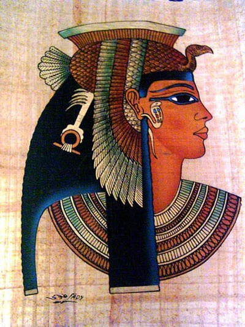
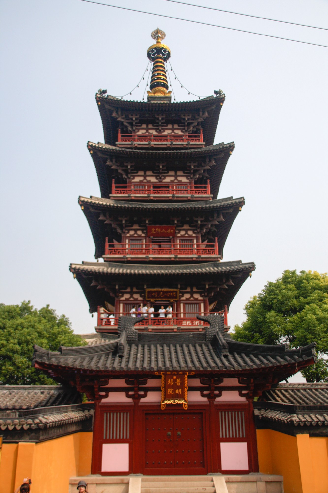
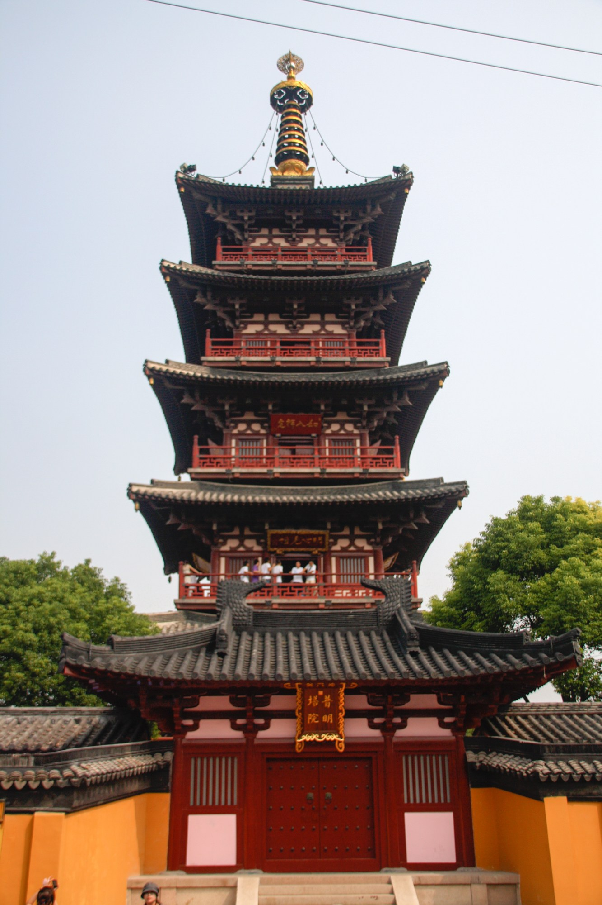

浪跡天涯 - 其他地區
洛杉磯
《洛杉磯》
我的貿易公司初期做雜貨生意，有什麼賣什麼。
1980年我出國前夕，看到了高雄一家工廠在報紙上刊登斗大廣告「新產品！徵求貿易商合作外銷」所謂的新產品是一台Rolls Royce古典車造型收音機，工廠老板引以為傲地告訴我，新產品是他自己開發設計的，尚未外銷國外，目前正在申請專利中，於是我興緻勃勃地帶了一台樣品出國，打算到中南美洲推銷。
台灣到中南美洲必須在美國過境停留一天，等待隔天轉機。我在洛杉磯好友家住了一晚，隔天早上好友上班，我獨自一人跑到downtown 閒逛，無意中經過一間成人電影院門口，頗覺新奇，於是花了四塊錢美金買門票入場，電影24小時連續放映不清場，讓你看好看滿看到虛脫為止。銀幕上一對男女正激烈撕殺著，呻吟聲此起彼落，電影鏡頭突然轉移到床頭櫃上方，赫然出現了一台勞斯萊斯古典車收音機，長相跟我帶出國的樣品一模一樣，我傻愣了半天，簡直不敢相信自己的眼睛。影片中的男女已偃兵息鼓，我也無心兜留，悻悻然走出了電影院，內心有一種受騙的感覺。
傍晚時分，我離開了洛杉磯，行前將那台勞斯萊斯送給好友，並且囑咐他一定要放在床頭櫃上面，臨睡前來點音樂，老婆會喜歡的，朋友承諾一切照辦。隔年我再到洛杉磯，從機場一路直奔好友的房間內，發現勞斯萊斯不見了，我質問車子跑去哪裡？好友回答說：「把它丟到工具間了，擺在床頭櫃上壓力太大，每次跟我老婆做愛，不小心瞥見了那台勞斯萊斯，總是看到你躲在車內偷窺著。」
洛杉磯簡介
洛杉磯（LosAngeles），位於美國加利福尼亞州西南部，是美國第二大城市，也是美國西部最大的城市，常被稱為「天使之城」（CityofAngels）。洛杉磯面積約1215平方公里，城市中心座標為北緯34°03′、西經118°15′，全市擁有約408.67萬的人口（2019年）。2019年，洛杉磯的地區生產總值為7109億美元。洛杉磯是美國重要的工商業、國際貿易、科教、娛樂和體育中心之一，也是美國石油化工、海洋、航天工業和電子業的主要基地之一。洛杉磯還擁有許多世界知名的高等教育機構，包括加州理工學院、加州大學洛杉磯分校、南加州大學、佩珀代因大學等。洛杉磯曾主辦了1932年洛杉磯奧運會、1984年洛杉磯奧運會，即將主辦2028年洛杉磯奧運會。

拉斯維加斯
《拉斯維加斯》
賭城拉斯維加斯。展覽會場就在我們住的飯店一樓大廳，大廳的另一端就是casino賭場，我喜歡玩21點，每次都會提醒自己，身上只帶美金100元，輸完就走人，走人是走人，只是走回自己的房間取錢，如此來回幾趟，不多輸一點錢不甘心。
我賭性堅強卻不帶偏財運，幾乎每賭必輸，在台灣和朋友打麻將，我是被公認的魯肉咖，印象中我只贏過一次錢，還是靠阿娥的大力幫忙。有3個酒肉朋友來我家白吃白喝後，居然還想打麻將贏我的錢，阿娥被迫挺身而出，藉口倒茶、送水果、遞毛巾，偷瞄朋友的牌，再打pass 給我。果然那一晚，3家烤肉有1家香，我大贏特贏，成功洗刷了魯肉咖的污名。成功的男人背後都有一個偉大的女人，果然不假！
在拉斯維加斯的街道旁，隨處可見一些免費的情色報紙DM ，印刷相當精美，內容盡是應召站和跑單幫女人的廣告，燕瘦環肥，任君挑選。尋芳客可以指定年齡、人種、膚色、胖瘦、高矮等等，條件越多，價錢越高。我依稀還記得有一個跑單幫白人女孩的廣告上，印3個大字「just part time」，讓我想起當年台灣的股災，加權指數由12000點跌到只剩2500點，電視報紙經常報導，許多菜藍族良家婦女玩股票，連買菜錢都輸光光，最後只好瞞著老公，下海兼差賺皮肉錢，造成家庭失和。
下面這則小故事，是洛杉磯的朋友告訴我的。
有一位來自台灣的觀光客，打電話給登廣告的女孩子，大約30分鐘後，房間門口出現了一位年輕的金髮美女，手中提著一台當年流行的cassette 收錄音機，笑臉迎人走進房間，第一句話說：「今天很高興能為你服務。」然後將手上的cassette 放在化粧檯上，不急不徐問你喜歡聽什麼歌？客人老孫是老歌星白光的粉絲，就放首老歌「魂縈舊夢」回味無窮；蒙古喜歡拉丁情歌，拉丁情人胡力歐唱的「besame mucho 」熱情浪漫；宜浩是香港人，梅艷芳高歌一曲粵語「女人花」悅耳動聽；阿波愛聽西洋歌，今晚安迪威廉斯「my way」保證奪標；老古獨鍾台語歌曲，讓葉啟田一起來「愛拼才會贏」吧！熟悉悠揚的音樂聲中，化解了彼此之間的那一份尷尬，讓你幾乎忘了站在面前的女孩子，是一位應召女郎。
隔年我再到拉斯維加斯，特地站在飯店大門外觀察，真的發現了一位女人自己開著敞篷車，停在大廳門口，是一個東方面孔的女孩，穿著短袖T恤和牛仔褲，手提一台cassette，從容不迫地走進了飯店內。


巴拿馬
《巴拿馬》
中南美洲是美國的後花園，有一小國長期國內經濟不景氣，公務人員發不出薪水，於是有國會議員提案直接向美國宣戰，以期打敗戰後獲取美國更多的經援，解決國家財政窘困。議場內一片叫好聲，當眾人歡欣鼓舞之際 ，突然一位年輕菜鳥議員起身發言：「萬一我們不小心打贏了呢？」一語驚醒夢中人，議員們才意識到事態嚴重，立即撤消提案停止討論，避免了一場打勝戰的悲劇發生。
巴拿馬是中南美洲的分界國，巴拿馬以北(哥斯大黎加)屬於中美洲，巴拿馬以南(哥倫比亞)為南美洲，巴拿馬運河則貫穿了太平洋和大西洋，是巴國的主要經濟動脈，由美軍託管多年之後，1999年底美國才交還給巴拿馬政府。巴拿馬首都巴拿馬城，世界各大銀行在此皆設有分行，其中包括台灣的兆豐銀行，我在巴拿馬所收的貨款，都經由兆豐銀行巴拿馬分行匯回台灣。
為方便台灣旅客到巴拿馬，長榮航空曾經開闢了由台北直飛巴拿馬的新航線，從此到巴拿馬只需在洛杉磯停留片刻後，原機再直飛巴拿馬，極其方便，可惜因客源不足，不久該航線就被取銷了。巴拿馬城的機場我是常客，屢屢經由該國進出中南美洲各地。有天我在機場入境大廳內，親眼目睹到一群大陸人，男女老少衣杉襴縷，面有菜色，身邊行李不乏鍋瓢碗盆，因為簽證的問題無法入境巴拿馬，10幾名大陸客被滯留在機場內，等候原機遣返洛杉磯或中國。可憐人為了逐夢而離鄉背井，最終卻功虧一簣，命運吹奏的悲歌，曲終人未散！
巴拿馬另一經濟命脈是科倫自由區(Zona Libre de Colon)，早期中南美洲各國皆採取貿易保護政策，管制外匯與進口，大批商人湧入科倫自由區採購，再轉運或走私回國，科倫自由區風光一時，之後隨各國陸續開放進口，科倫自由區光環褪色，今非昔比。科倫自由區的治安不佳，偷竊搶劫時有所聞，但我進出多年未曾被偷過搶過，兆豐銀行在自由區也設有分行，幾年前傳出洗錢的醜聞，已被巴國政府註銷執照，關門大吉。巴拿馬是中南美洲最聰明的國家，長年以來，中南美洲各國的貨幣對美元頻頻貶值，唯獨巴拿馬穩若泰山，因為巴國的通用貨幣就是美金，除了一些鑄幣自製外，巴拿馬自己不印鈔票，美元就是他們的國幣。
另類的巴拿馬之光是翡翠莊園生產的藝妓咖咖(café geisha)，風味獨特，產量稀少，享譽全球，是精品咖啡中的精品。傳說在某個神秘時間點喝了藝妓咖咖，男人會飛簷走壁，增加一甲子功力，女人則瞬間變成了美麗藝妓，風情萬種兼多才多藝。據說有一位女同學很愛喝藝妓咖啡。
巴拿馬簡介
巴拿馬共和國（西班牙語：República de Panamá ）簡稱巴拿馬（西班牙語：Panamá是中美洲最南部的國家，面積7.55萬平方公里，人口393萬。連接大西洋及太平洋的巴拿馬運河位於國家的中央，劃分了南北美洲擁有重要的戰略與經濟地位。基於它重要的地理位置，巴拿馬的經濟的重點是服務業，以金融、貿易和旅遊為主。由於巴拿馬的建立和貿易都和美國有重要關係，巴拿馬從1907年開始使用美元作為流通貨幣，本國貨幣為巴波亞，但只發行1分、10分、25分、50分的鑄幣，與美元等值並同時在境內使用。是世界上第一個美國以外使用美元作為法定貨幣的國家。
巴拿馬是全世界最主要的權宜船旗註冊國，據2007年統計，有4954艘船舶登記為巴拿馬籍。

 



 


越南
《越南》
越南剛開放初期，我和幾位好友共同籌資，計畫透過當地人頭，到民間收購一些土地。
1992年，我第一次搭上了飛往越南胡志明市的班機，在機上發現了越南空姐身著絲綢長襖，白色半透明，高叉開及腰間，內衣底褲隱約可見，我瞬間心中小鹿亂撞，於是決定愛上越南這個國家。胡志明市原名西貢，是南越的首都，1975年越戰結束後，南越遭北越併吞，北越頭子胡志明遂將西貢改名為胡志明市。
我住在第五郡的天虹飯店，飯店2樓是酒店夜總會，每當華燈初上時，成群結隊的越南小姐打扮入時，笑容可掬地走進了飯店大廳到2樓上班，「回眸一笑百媚生，六宮粉黛無顏色」晚餐後，我總是喜歡坐在飯店lobby 的沙發上，欣賞著這美麗動人的畫面，有一種異國風味的美。
胡志明市午夜12點後，實施宵禁。宵禁前一刻，路上突現大量機車和人力黃包車，東南西北到處亂竄，個個神色慌張，爭先恐後，蔚為奇觀。常見越南小姐騎著機車，後面載著一位手提簡單行李的男人，急急忙忙地不知趕往何處，這男人十之八九是來自台灣。
有一位台南五金工廠的老板，同住天虹飯店內，有一晚不甘寂寞也加入了機車追逐的行列，跟著越南小姐回到她的住處，發覺房間內並無床舖，地上一塊大木板擺放著枕頭棉被，昏黃燈光下有幾隻小強四處爬行，房間就在豬舍不遠處，偶而飄來陣陣異味難聞，台南老板那把熊熊的烈火早被澆熄，歸心似箭，顧不得正事未辦，苦苦哀求越南小姐載他回飯店，對方還算厚道，一路上繞小巷避開了夜間臨檢，將人安全送回飯店內，才結束了一場幽會驚魂記。
越南房地產並未開放外國人投資，只能透過當地的人頭戶進行，存在一定的風險。一般民間土地買賣，皆以黃金兩數計價，標準的逃難心理，我的人頭戶陪著我到處尋尋覓覓，主要的是近郊的農地。有幾次已和賣方談妥價錢，簽約時不是反悔不賣，就是要再提高價錢，毫無誠信可言。更棘手的是，當地人口語相傳有台灣人要來買地，一日三漲，造成惜售，我始終沒有出手的機會。一個半月後，我決意小賠出場，放棄購地的計劃回台灣。我在胡志明市多停留了兩天，做最後一次巡禮。我跑到70公里外的古芝地道參觀，當年越共為了躲避美軍的轟炸，挖掘了古芝地道，地道十分狹窄，必須彎腰慢行，以蒙古兄高大的身軀，橫豎進不了，只能匍匐前進。
離別前夕，我獨自佇立在湄公河畔，夜幕低垂，河水靜靜東流而逝，我低吟著「黃昏的故鄉」，依依不捨地，向越南說再見！
後記：回高雄後，我把在胡志明市停留期間的所見所聞，鉅細靡遺地寫了一篇報導文章《前進越南》發表在經濟日報副刊，提供給前往越南經商或旅遊人士參考，賺了幾千元稿費。
越南簡介
越南社會主義共和國，通稱越南，是位於東南亞的中南半島東端的社會主義國家，北鄰中國，西接柬埔寨和寮國，擁有超過9,600萬人口，位居世界第15名。越南的首都是河內市，最大城市是胡志明市。執政黨越南共產黨是目前越南境內唯一的合法政黨。相關資訊
越南 胡志明市
《胡志明市》
1992年，我在胡志明市短暫停留期間，意外地做了一件終生難忘的事！
我臨時有事必須回高雄一趟，當天並無班機直飛台灣，還好旅行社幫我找到了一架越南航空飛曼谷的班機，我可以在曼谷轉搭其他飛機，當晚回到高雄。我迫不及待訂位，隻身未帶任何行李，匆忙地趕到機場，剛踏進機場大廳，即傳來陣陣哭喊聲，此起彼落，大廳內濟滿了人潮，散聚在各個角落，人人痛哭流涕，呼天搶地。機場人員告訴我，這些人大部份是來送行的，因為親友中有人要移民去澳州，此後不知何年何月方能再見面，甚或就此永別，無怪乎一群人依依不捨，哭作一團，澳洲政府每年會給越南若干移民配額。突然間，我意識到整個大廳除了我外，沒有半個台灣人或外國人，我到櫃台辦理登機劃位時，座位竟然是1A，我問櫃台小姐是否只有我一個外國人，對方微笑點點頭，我開始忐忑不安起來，心裏不停地嘟噥著：「為什麼只有我一個外國人？」
走進了候機室，往外一瞧，霎那間我臉色發白，冷汗直冒，停機坪上一架蘇聯的老爺機，孤立在風中對我說：「總有一天等到你！」此機型意外頻傳，外國早已淘汰禁飛，只有越南如此貧窮落後的國家，人命不值錢，無怪乎外國人不敢搭乘。我的心情盪到了谷底，懊悔莫及卻已無退路。
登機時間一到，越南人魚貫而出，緩步走向停機坪，機場裏裏外外哭喊聲再起，響徹雲霄，越南人身上的衣著非黑即白，一行人有如出殯的隊伍，送往生者最後一程，只差沒有人手舉幢幡和往生者遺照而已。我垂頭喪氣跟在隊伍最後面，偶而抬頭仰望，無語問蒼天。「風蕭蕭兮易水寒，壯士一去兮不復還。」難以形容的悲涼凄切！
剛踏入機艙門，一股刺鼻的霉味迎面撲來，機艙內裝璜年久失修，顯得格外破舊，上方有一盞小燈半脫落，懸在空中搖晃著。空難片電影的驚悚畫面，瞬間劃過我的腦際，眼皮跳不停，越想越怕，越怕越想，整個人幾近崩潰，癱軟在座位上，飛機起飛時，我雙手合十，心中默唸著阿彌陀佛，請出眾神保祐。反觀機上的越南人，已不再哭泣，個個興高采烈，比手畫腳，高談闊論著，可能是人生第一次出國吧！
老爺機飛不快也飛不高，引擎聲轟隆作響，機身顫抖不止，彷彿即將空中解體，感覺飛機越飛越低，幾乎貼著海平面，隨時有衝入海裏的可能，所幸當天晴空萬里，不見亂流，否則後果不堪設想。胡志明市到曼谷飛行時間不到兩小時，那天似乎飛了一個，世紀。
飛機終於安全降落在曼谷機場，機艙內一片歡呼聲，我拖著疲憊的步伐，走下了飛機，恍若隔世。花了5塊錢美金在曼谷機場內簡單淋浴一番，讓自己恢復元氣，等候晚間回高雄的班機。
胡志明市簡介
胡志明市，原名西貢；曾是越南共和國首都，現是越南最大的城市及其五個中央直轄市之一，位於越南東南部，為越南經濟、貿易、交通及文化中心。該市現名是為了紀念越南民主共和國建國領導人、越南勞動黨主席兼越南民主共和國主席胡志明。埃及
《埃及》
年輕時看了伊麗莎白泰勒和李察波頓 主演的電影《埃及艷后》從此對埃及這個文明古國產生了美麗的憧憬，希望有朝一日能有機會去看看金字塔和尼羅河。
我決定去埃及走一趟，其實埃及對我公司而言，只是一個小市場，我們只有一位埃及客戶，生意不大，不值得我千里迢迢飛過去，光來回機票就要花不少錢，與其說我去埃及開拓商機，倒不如說我是想圓年輕時候的一個夢而已。我從台北出發在曼谷轉機直飛埃及，約20幾個小時後抵達埃及首都開羅機場，海關人員藉故刁難，不讓我入境，因為他們弄不清楚我的護照是哪一國人，盧了半天就是不放行，最後只好打電話給我的客人，請他當保證人，我才獲准入境。當年手持台灣護照，即使申請了簽證，也是到處碰壁受歧視，與今日的台灣護照受到了世界各國的歡迎，不可同日而語！
尼羅河從中流過開羅，將開羅劃分成新舊兩個市區，舊市區街道狹窄彎曲，到處是阿拉伯建築，新市區則高樓大廈林立，商業金融中心。與許多阿拉伯城市一般，開羅每到星期五下午，市區所有的廣播器就會發出召喚禱告通知，市民立即停下手邊的工作，紛紛湧入清真寺內頂禮膜拜，街道上不見人影，開羅宛如一座空城。那是一個小貿易商單打獨鬥的年代，我在開羅第一天就碰到了難題，整個開羅市區竟然找不到一本電話簿，街道商店沒有門牌號碼，推銷業務何其困難。我獨自站在尼羅河畔，拔劍四顧心茫然，河水滔滔，何去何從？突然之間，我想到了金字塔。
阿拉伯人有句諺語：「世人怕時間，時間怕金字塔。」時間的洪流，帶走了多少千古英雄與榮華富貴，唯獨金字塔能屹立不搖四千年，亙古長存。我參加了飯店的city tour 夜遊活動，參觀古夫金字塔外舉辦的聲光秀sound and light。入夜之後，暗黑中猛然燈火四射，交錯多變的光束，耀眼奪目，伴隨著鏗鏘有力的交響樂聲，金字塔和人面獅身像乍然而現，一場璀璨聲光響宴，讓遊客沉醉在視聽震撼之中，不知不覺穿越時空隧道，回到了古埃及的榮耀傳奇。白天我再度造訪吉夫金字塔，氣氛與昨夜迥然不同，一群身穿白長袍的埃及男人，髒兮兮牽著駱駝圍坐在地上，等候觀光客上門，人畜隨地便溺，垃圾滿地，異味撲鼻。此情此景，金字塔和人面獅身像看盡了世間的物換星移，亦徒喚奈何！
離別開羅前夕，我忘了去觀賞一場埃及女人的肚皮舞秀，是此趟埃及行的最大遺憾！
後記：所附圖片是來自於翻拍，與我30幾年前親眼目賭的聲光秀，一模一樣。在吉夫金字塔的前方，雄壯的人面獅身像靜靜地趴著，千百年來守護著金字塔，忠貞不移。
埃及簡介
埃及阿拉伯共和國，通稱埃及，是東北非洲人口最多的國家，面積為1,001,450平方公里，2020年2月人口突破1億。原存在於當地的古埃及是世界文明古國之一，與兩河流域文明有一定程度的交流，不過在希臘與羅馬人的統治下，古埃及文明在西元前逐漸沒落，後來被阿拉伯文化所取代

 

中國 蘇州
《蘇州》
《楓橋夜泊》
月落烏啼霜滿天，江楓漁火對愁眠。
姑蘇城外寒山寺，夜半鐘聲到客船。
1993年，我們在蘇州建了一間成衣廠，由一位胡姓好友負責管理。小胡在台灣出生，祖籍蘇州，自從他到蘇州籌建工廠後，突然間冒出了一大票親人，堂叔堂伯堂兄弟姊妹阿貓阿狗全來報到，整個蘇州城幾乎都姓了胡。
「上有天堂，下有蘇杭」蘇州是一個古城，好山好水，城外的寒山寺因唐代詩人張繼的一首詩《楓橋夜泊》而遠近馳名。「月落烏啼霜滿天，江楓漁火對愁眠，姑蘇城外寒山寺，夜半鐘聲到客船。」多麼美麗哀愁的詩啊！來到蘇州後，我迫不及待造訪了寒山寺，一間千年古剎，加上一座鐘樓，我付了5元人民幣，爬上了鐘樓敲兩下鐘，算是到此一遊，內心憧憬的那份懷古幽情，卻也隨著鐘聲而消逝得無影無蹤。
我女兒讀服裝設計，我要她設計了幾款睡衣，在台灣打好版後，拿到蘇州的成衣廠製作樣本。在一個嚴寒的12月天裏，我來到了蘇州工廠後，方才知道蘇州人不喜歡洗澡，工人、幹部、廠長都一樣，也許是氣溫太低的關係，習慣成自然，大陸籍廠長告訴我說已經一個多月沒洗澡了。為了歡迎我來到蘇州，小胡晚餐後招待廠長和一群幹部到街上的澡堂洗澡，這也算是另類的獎勵方式，洗完後一群人直呼，原來洗澡是如此過癮！
小胡帶我去參觀一家日本人的成衣廠，廠房規模比我們工廠大許多，機器設備新潁，冷氣廠房，工作環境極佳。參觀途中，我一時尿急，匆忙中闖進了員工男廁所，那一刻我彷彿走進了時光隧道裏，驚覺廁所居然沒有門，幾位男生蹲在裏面瞥見我，大眼瞪小眼，也不見小便斗，只是一條溝，男員工比肩而站，左顧右盼，高下立判，此情此景，我尿意全失，迅速地逃離現場。我問日本老總：「貴廠如此先進漂亮，為何搞出一個中古世紀的便所？」日本老總無奈苦笑說：「原來也是現代化廁所，間間有門，抽水馬桶，也有小便斗，可是大陸員工用不習慣，群起抗議，要求立即改善，否則揚言集體罷工，不得已才改回現在這副模樣。」大陸員工紛紛表示，一個人關在廁所門內，沒人看見，拉不出來！
一星期後，我的睡衣樣品終告完成，大陸籍廠長非常滿意，直誇質量高。「雲賞衣裳花賞容」回高雄後，有請阿娥試穿，女人穿睡衣是多麼羅曼蒂克，誰知新衣一穿上身，霎那間阿娥化作了一個共產黨革命大媽，呲牙咧嘴，俗擱有力，一副欠揍的樣子。隔天我將幾套睡衣樣品送給大樓的清潔工歐巴桑們，並且再三叮嚀她們，晚上穿新睡衣睡覺時，記得要戴上機車安全帽，以防被老公打成腦震盪。
蘇州簡介
蘇州，簡稱「蘇」古稱姑蘇、平江，江蘇省轄地級市，是國務院批覆確定的長江三角洲重要的中心城市之一，國家高新技術產業基地和風景旅遊城市，加入聯合國教科文組織全球創意城市網路，成為手工藝與民間藝術之都。全市轄5個區、代管4個縣級市，總面積8657.32平方千米，建成區面積477.63平方千米。根據第七次人口普查資料，截至2020年11月1日零時，蘇州市常住人口為1274.8262萬人。2020年，蘇州市實現地區生產總值20170.45億元。蘇州屬亞熱帶季風海洋性氣候，四季分明，雨量充沛，種植水稻、小麥、油菜，出產棉花、蠶桑、林果，特產有碧螺春茶葉、長江刀魚、太湖銀魚、陽澄湖大閘蟹等。
蘇州是首批國家歷史文化名城之一，有近2500年曆史，是吳文化的重要發祥地，有「人間天堂」的美譽。中國私家園林的代—蘇州古典園林和中國大運河蘇州段被聯合國教科文組織列為世界文化遺產。 2018年12月，蘇州入選2018中國大陸最佳地級城市第1名，創新力最強的30個城市第3名，2018中國最佳旅遊目的地城市第3名。
相關資訊
- 2021蘇州旅遊攻略 - 蘇州好去處 -觀光旅遊景點-Trip.com
- 蘇州10大旅遊景點
- 蘇州旅游攻略指南。蘇州，不止是天堂! - 手機马蜂窝 - 今日頭條
- 蘇州幾個特色景點，遊蘇州，看這篇報導就可以了
- 蘇州美食


 

中國 長沙
《長沙》
中國大陸剛開放之際，我與湖南長沙一家國營進出口公司搭上線，合作銷售人造聚酯棉。1991年雙十國慶日當天，我接到了對方的訊息，採購批文已經下來，要我即刻趕往長沙簽約。當時兩岸尚未通航，必須經由香港進出大陸，香港飛長沙班機每週只飛兩三天，我不得已從香港乘渡輪到深圳，再從深圳搭火車去長沙。深圳火車站裏裏外外擠滿了人，萬頭鑽動，我只好找上黃牛付了雙倍票價，買了一床到長沙的臥舖，搭了14個小時的火車，隔天清晨抵達長沙。進出口公司的人早已在火車站等候，年長一點的是經理，另有一位小姐和三位年輕人。經理說訂單的買主是桃源縣一家國營紡織廠，等一會就驅車往，下午3點到工廠簽約，晚上廠方作東幫我洗塵。
中午時分，一群人分乘兩部小汽車，抵達桃源縣並住進一家國營飯店，午餐由經理請客，6人一大桌，擺滿10幾道菜，我客氣向經理說不必太豐盛，簡單就好。下午3點準時到紡織廠拜訪，雙方在合約上簽名蓋章，大功告成，前後不到1小時。晚上工廠請我吃飯，兩大桌坐滿了20幾人，大魚大肉，大碗喝酒大口抽菸，湖南菜以辣出名，煙霧瀰漫中連空氣都是辣的，折磨了一整晚，精疲力竭地回到飯店，倒頭就睡。我真的非常佩服共產黨，一件極簡單的事，非要搞到複雜不可，這筆生意已經談了一陣子，最終簽約只需要幾張傳真往返即可完成，一定要勞師動眾叫我來桃源縣一趟不可。其實這就是大陸人吃公家飯的生存之道，當年大陸還很落後貧窮，尤其是內陸地區，公家單位的待遇很低，經常一年半載領不到薪水，因此只要有撈的機會，都會相互通風報信，一起出差吃香喝辣賺外快。
隔天用過早餐後，一行人準備回長沙，我到櫃台結帳看到帳單時，十分錯愕，我問櫃台是否算錯金額了？櫃檯說沒算錯，房間3間，我1間、經理和小姐1間、3位年輕人1間，另加昨天中午午餐和今日早餐，全部算在內。我心裏幹聲連連，想起昨天誤以為午餐是經理請客，我還頻頻說不要太舖張，強龍不壓地頭蛇，只好轉念花些小錢慰問大陸同胞吧！回程途中，經理問我飯店的收據要不要，我二話不說全給了他。回到長沙後，請經理幫我訂了一家飯店，我必須在長沙住一晚，等明天早上的班機飛香港，我告訴經理想早點休息，晚餐我自理，明天早上我自己去機場，不敢勞駕他送機。我一身疲憊倒在床上睡著了，卻被電話聲吵醒，櫃台說樓下有人找我，我猜是經理臨時有事，匆忙趕下樓，卻見昨天和我們一起去桃源縣的那位小姐，站在櫃台邊，笑容可掬地問我想不想去外面走走。長沙我第一次來，真的很想出去看看夜景，但缺乏冒險犯難的精神，不敢和陌生女子同行。我禮貌上請小姐在飯店內喝了一杯咖啡，對方問我明天早上幾點的飛機，她要送機，我說明天一大早就走，婉拒了她的好意。
隔日清晨，我提著簡單的行李下樓結帳時，嚇然發現那位小姐已經坐在大廳沙發上。我真的不想招惹麻煩，堅持自己去機場，離開飯店時，小姐遞給了我一張小紙條，留有她的名字和電話，我也回送她10塊錢美金。上計程車後，我立刻將小字條撕掉，我老婆是不好惹的，她正在讀李昂的小說《殺夫》！
後記：以上文章提到桃源縣，何許地方也？高中國文課本教過，東晉文人陶淵明的《桃花源記》，桃花源即現在的桃源縣。蒙古兄說不定會背課文：「～忽逢桃花林，夾岸數百步，中無雜樹，芳草鮮美，落英繽紛～」。
湖南長沙市簡介
長沙市是中華人民共和國湖南省省會，簡稱長，別稱星城，古又名潭州，素有「屈賈之鄉」、「瀟湘洙泗」之譽。長沙位於湘東北的湘江下游，為中國中部重要的中心城市以及中國特大城市之一、全國性綜合交通樞紐、首批國家歷史文化名城，並與周邊的株洲、湘潭共同構成長株潭城市群。市區通用湘語長沙話，下轄縣市亦使用寧鄉話、贛語瀏陽話等。相關資訊
- 長沙好去處
- 湖南長沙是2020年最「網紅」的城市，存在感太強了
- 长沙十大最好玩的地方，你去過幾個？
- 长沙十大必玩景點排行榜 - 今日頭條
- 湖南張家界、《阿凡達》外景取景地“乾坤柱”、天門山、大峽谷玻璃橋、芙蓉鎮、鳳凰古城旅遊攻略